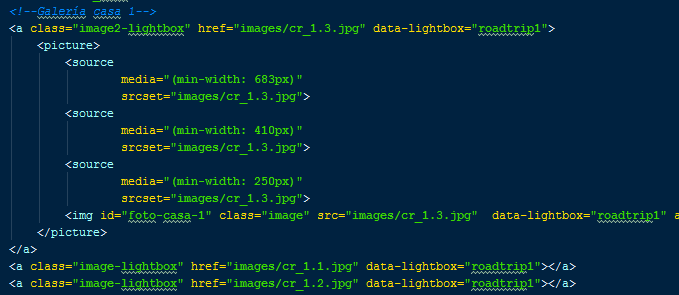

En la página de inicio inserto la etiqueta <noscript>.
Si está deshabilitado muestro el mensaje de error que está dentro de la etiquet <noscript>.
Cookies activas
En la página de inicio, intento crear una cookie de prueba nada más cargar la página.
Acto seguido uso una función para obtener la cookie, si me da el resultado de la cookie que quería crear
significa que se creó, con lo cual el cliente tiene las cookies activadas. En caso contrario se abrirá un cuadro
de diálogo de jQuery UI informando del problema.
El cuadro de diálogo tiene dos botones: "Aceptar", que cierra el cuadro en conformidad; y "Ayuda" que redirige
al cliente a una página donde enseña como activar las cookies en los diferentes navegadores.
Efecto página inicial
En la página de inicio, lo primero que muestro durante dos segundos son cuatro imágenes
de cuatro casas rurales distintas.
Al pasar los dos segundos, cada imagen se desplaza hacia un lado: la de arriba a la izquierda
se desplaza hacia su izquierda, la de arriba a la derecha se desplaza hacia arriba, la de abajo a la izquierda
se desplaza hacia abajo y la de abajo a la derecha se mueve hacia su derecha.
Código fuente:
Efecto títulos casas
En la página principal, cuando se ha cargado todo el DOM aplico un efecto de entrada suave a
los títulos de todas las casas rurales.
Para ello aplico unas clases y atributos a los elementos para que se aplique el estilo correspondiente
en la hoja de estilos animate.css. Código html:
Código CSS:
Lightbox de imágenes
En la página principal, cada casa rural de la lista tiene un enlace que pone "Fotos" para mostrar
la galería de dicha casa. Para esto he utilizado el plugin de jQuery lightbox.
Si se pincha en el enlace aparecerán todas las fotos de la casa en una lista horizontal.
Se puede ver cada foto en grande si se hace click sobre ella, y se permite el desplazamiento por
la galería de fotos viendo cada una de ellas en grande. Además se puede salir del "lightbox" pinchando sobre la "X" de la
foto o simplemente fuera de la imagen.

Código HTML:
Código JQuery:
Lightbox de imágenes
En la página principal, cada casa rural de la lista tiene un enlace que pone "Fotos" para mostrar
la galería de dicha casa.
Si se pincha en el enlace aparecerán todas las fotos de la casa en una lista horizontal.
Se puede ver cada foto en grande si se hace click sobre ella, y se permite el desplazamiento por
la galería de fotos viendo cada una de ellas en grande. Además se puede salir del "lightbox" pinchando sobre la "X" de la
foto o simplemente fuera de la imagen.


")